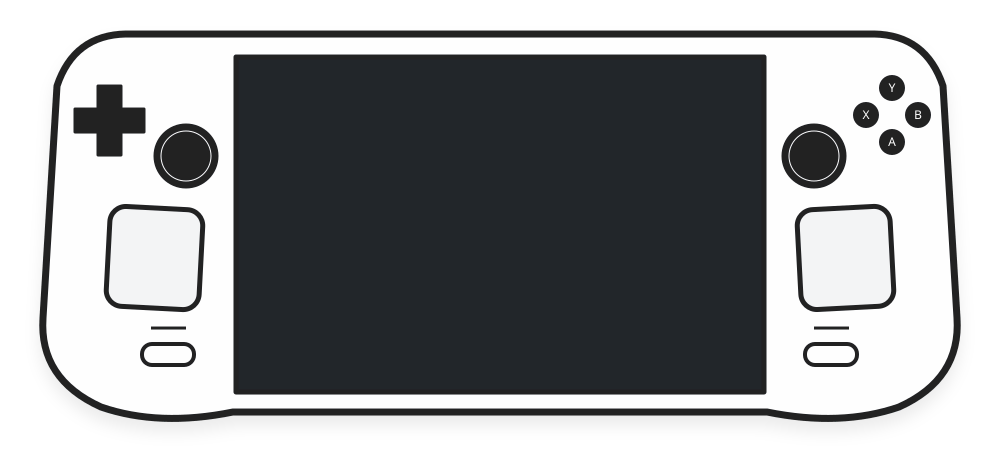
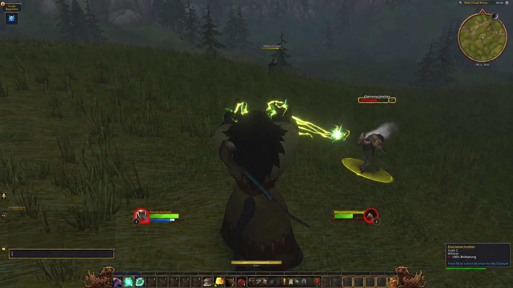
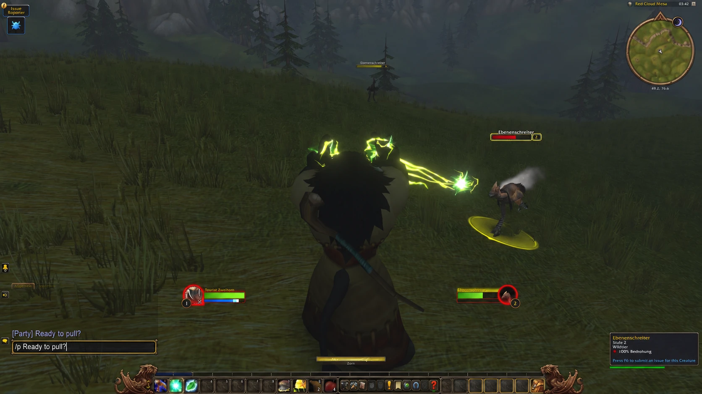

Fast local transcription
Short messages can be ready in under a second, without leaving your device.
Voice-to-text for SteamOS games and apps. Fast, local and designed for controllers.


Use your favourite controller button combination.
Decktation transcribes your voice on your device.
Your message is typed directly in the game or app.
Talk to your guild, party and friends without leaving your controller.


Designed for Steam Deck and controller-driven SteamOS PCs.
Short messages can be ready in under a second, without leaving your device.
Configurable controller shortcut, haptics and supported gamepads.
Audio and transcripts stay on your device.
Optimized behavior for WoW, Guild Wars 2 and Generic text entry.
Dictate in 99 languages, including English, Spanish, French, German and Portuguese. Detects your language automatically.
Afrikaans, Albanian, Amharic, Arabic, Armenian, Assamese, Azerbaijani, Bangla, Bashkir, Basque, Belarusian, Bosnian, Breton, Bulgarian, Burmese, Catalan, Chinese, Croatian, Czech, Danish, Dutch, English, Estonian, Faroese, Filipino, Finnish, French, Galician, Georgian, German, Greek, Gujarati, Haitian Creole, Hausa, Hawaiian, Hebrew, Hindi, Hungarian, Icelandic, Indonesian, Italian, Japanese, Javanese, Kannada, Kazakh, Khmer, Korean, Lao, Latin, Latvian, Lingala, Lithuanian, Luxembourgish, Macedonian, Malagasy, Malay, Malayalam, Maltese, Māori, Marathi, Mongolian, Nepali, Norwegian, Norwegian Nynorsk, Occitan, Pashto, Persian, Polish, Portuguese, Punjabi, Romanian, Russian, Sanskrit, Serbian, Shona, Sindhi, Sinhala, Slovak, Slovenian, Somali, Spanish, Sundanese, Swahili, Swedish, Tajik, Tamil, Tatar, Telugu, Thai, Tibetan, Turkish, Turkmen, Ukrainian, Urdu, Uzbek, Vietnamese, Welsh, Yiddish, Yoruba
Accuracy varies by language and model.
Open Decky Settings and enable Developer Mode.
Decktation is awaiting approval for the official Decky Store. Direct URL installation currently requires Decky’s Developer Mode.
Choose Install Plugin from URL in Decky’s developer options. Paste this URL and confirm.
https://silverfoxy.github.io/decktation/latest.zipDownload the ZIP on your Steam Deck. In Gaming Mode, open Decky Settings → Developer → Install Plugin from ZIP, select the downloaded file and confirm. No need to type the URL.
Download Decktation ZIPChoose your game and language, then enable Decktation. Focus a text field, hold L1 + R1, speak and release to write your message.
Direct installations require manual updates.
Decky is a one-time setup. Once installed, plugins are managed from Gaming Mode.
No terminal required.
On your Steam Deck, press the Steam button, open Power and choose Switch to Desktop. Wait for the desktop to appear.
Do this part on your SteamOS device.
Once in Desktop Mode on your Steam Deck, open Firefox or another web browser. Enter decky.xyz/download in the address bar to download the official installer.
The installer will guide you through administrator permissions. If you already have an admin password, enter it when asked. If not, it offers to set a temporary password and remove it when the installer finishes. You do not need to create one beforehand or use the terminal.
If Firefox names the file decky_installer.desktop.download, rename it to decky_installer.desktop. Move it to your desktop and double-click to open it.
Decktation processes audio and transcripts locally. Your dictation is not sent to a cloud transcription service.
Game-specific chat preset.
Game-specific preset.
Dictate into focused text fields in other games and apps.
Generic mode can work anywhere Decktation can safely enter text into the focused field.
A connection is needed to download a Whisper model the first time. Dictation itself is processed locally once the model is available.
No. Audio and transcripts are processed locally. Optional diagnostics are separate and opt-in.
No. Decktation includes WoW, Guild Wars 2 and Generic behavior for other compatible text fields.
Short messages can be ready in under a second after you release the buttons. Timing varies with your device, the selected model, message length and how busy the game is.
Yes. The source code, releases and issue tracker are available on GitHub.
Designed for Steam Deck and controller-driven SteamOS systems. Hardware and controller compatibility can vary.
Once the required Whisper model is downloaded, dictation is processed locally without a cloud transcription service.
Decktation reads controller input and enters text through Decky permissions. Dictated text is handled as data, never executed as a shell command.
Browse releases and development builds to try upcoming changes and share feedback.
Releases & test buildsInstall Decktation and start dictating in your games.